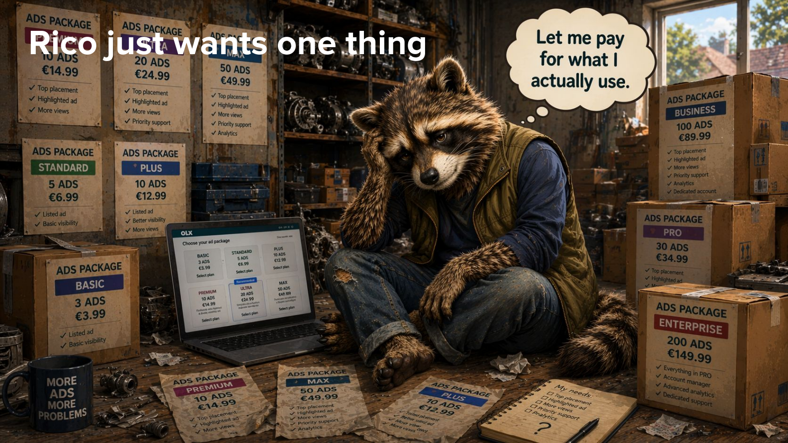
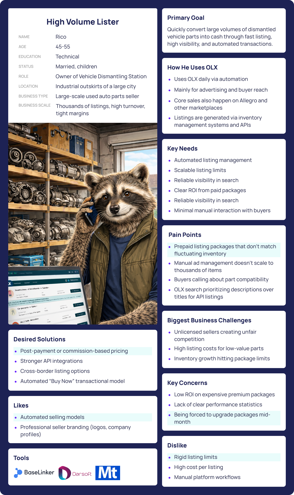
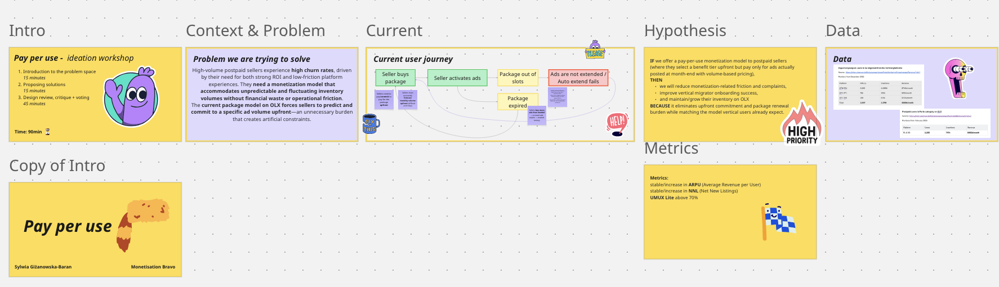
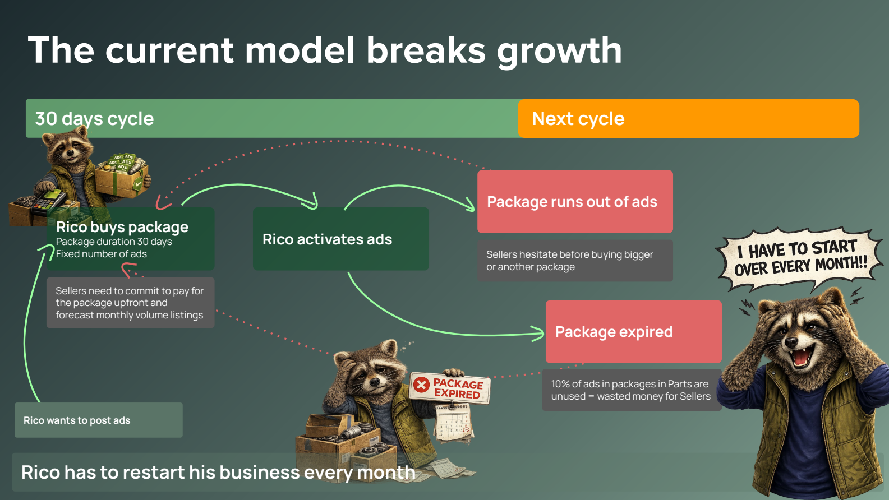
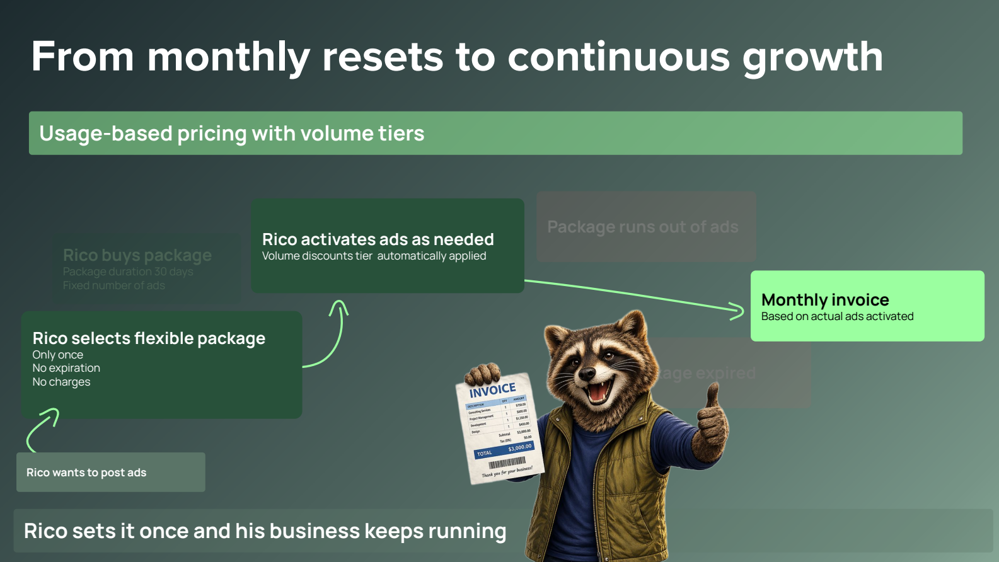
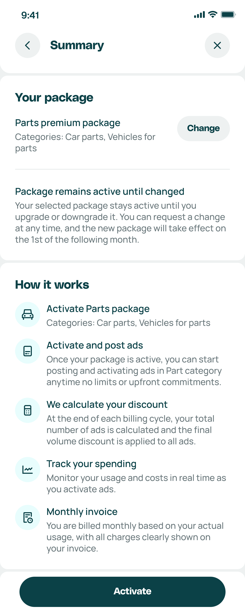

The package model made our best sellers pay to guess, and they were leaving because of it
OLX's biggest sellers (car dealers, parts traders, seasonal listers) were leaving the platform, faster every month. What they need is simple: their money's worth and no unnecessary hassle. The package model gave them neither. It made them guess how many ads they'd need next month and pay upfront for a fixed number that expired after about 30 days. Guessing wrong cost them either way. And there was a third, less obvious problem.
Money wasted
A seller who bought 100 ads but only posted 70 lost the other 30 when the month ended. They paid for ads they never got to use.
Lost sales or pricier top-ups
Running out mid-month left two bad options: hold the inventory back and miss sales, or buy another package at a worse rate than the first one.
Sellers capped themselves
Sellers with inventory ready to go would simply stop posting once their package ran out, because buying more felt like overspending. Nobody designed a limit, but the package worked like one.
high-volume sellers YoY
#1 reason for leaving
at risk (Otomoto · Autovit)
Timing made it worse. Car parts sellers moving to OLX from automotive vertical platforms like Otomoto and Autovit were used to paying per ad. For them, packages felt like a step backwards, at the exact moment we needed them to stay. On top of that, the buy-package flow had to be repeated every 30 days.

"All of these problems come from one thing: asking sellers to predict the future. So the job wasn't to design a better package. It was to remove the guessing, so sellers can post freely and pay for what they actually use."
Root causeTwo sections, not four: what I knew and decided, then what I built and proved
The thinking still moved from problem to direction to build to proof, that part never changes. But splitting it into four textbook phases made a lean four-month project look more staged than it was. What actually happened was two connected efforts, and AI shows up differently in each.
Why are sellers leaving, and what should we build instead?
Design work: forming a hypothesis, digging into the seller interview archive, weekly stakeholder meetings, building personas, writing the problem statement and HMWs.
Where AI helped: drafting the hypothesis, analysing the archive to confirm we were solving the right problem, and grounding both personas in that same research instead of a generic template.
What could the model look like, and does it actually work?
Design work: a workshop with engineers, picking the winning concept, designing straight in code, running a live usability study, deciding what to fix, handing off.
Where AI helped: 7 working concepts in a 4-hour workshop, a fully working prototype built in Claude Code that doubled as the test stimulus and the handoff artifact, pushed into Figma through MCP for design-system documentation.
Four months to deliver, so this stayed lean: confirm the problem, then sharpen it
With only four months to deliver, we couldn't afford a long research phase, and we didn't need one. The archived seller research already told us we were solving the right problem. So discovery focused on two things: benchmarking how other platforms handle pay-per-use pricing, and building a hypothesis grounded in the research and data we already had. Then we moved into ideation as fast as we could.
How Allegro and eBay charge sellers
Both competitors work on store subscriptions plus per-listing fees. Neither asks sellers to guess an ad count upfront. That set the bar for what migrating sellers would consider normal.
The hybrid model had already failed
An earlier project tested a hybrid model (listing fee plus sales commission) in three hypotheses. In-depth interviews assessed all three as not true: sellers saw the hybrid as unfair. And with most car parts sold offline, there's no reliable event to charge a commission on.
Car parts sell slowly
Only 14% of active ads had been posted in the last 28 days. The average ad was 421 days old, and 75% of listings stayed active for 76 days or more. Slow-moving inventory fits 30-day ad packages especially badly.
The AI tools found plenty of patterns in the archive and the earlier research. My job was deciding which ones set the direction: with hybrid commission models already tested and rejected as unfair, and no reliable way to charge on offline sales, I focused the project on pure usage-based pricing. Charge for ads actually posted, nothing else.
Two personas and a problem statement, built to move fast
The opportunity brief had already named the problem, so this stayed lean. I built two personas, a high-volume lister and a mid-volume lister, straight from the NotebookLM research we'd already analysed, and used them to sharpen the opportunity brief into a problem statement and a set of HMWs the team could design against.

High-volume postpaid sellers need a monetisation model that accommodates unpredictable inventory volumes without financial waste or operational friction, because the current package model forces them to predict and commit to the unpredictable.
Claude drafted 5 versions of the problem statement. I picked the one that named the guessing itself as the problem. That version steered the team away from "let's build better packages" and toward getting rid of the forecast altogether.
A 4-hour engineering ideation session that produced 7 working concepts, voted and stress-tested
Instead of a traditional design sprint, we ran a workshop in Lovable with engineers building alongside designers, then a second ideation round with product, commercial, and engineering stakeholders. 7 interactive prototypes were made and voted on in a single session. Claude Design gave us design-system-consistent explorations to draw inspiration from, and Cody (UX engineering agent) checked what was technically realistic before anything went further.

A weekly rhythm, born out of that first workshop
After the ideation session, I started sitting down every week with product, commercial, and engineering. That's where product decisions got made, designs got reviewed, and go-to-market plans, engineering updates, and the roadmap got discussed, along with any blockers and concerns, all the way through to delivery.
7 concepts built and voted in one session
Pricing page, posting flow, usage dashboard, and single-improvement concepts prototyped live in Lovable. Engineers contributed as co-creators. Dot voting picked the bracket-progress dashboard and the interactive calculator as the top directions.
Ideate, get inspired, then build it for real
Lovable built the fast, throwaway ideation prototypes in the workshop. Claude Design generated on-brand design explorations to draw from. Claude Code then built the final, fully working prototype used in testing and handoff.


Postpaid PPU with bracket pricing + benefit tiers
Sellers choose Basic, Premium, or Mega tier (listing quality). Post unlimited ads. Billed at month-end on incremental brackets. Showing sellers how close they are to a cheaper rate turns transparent billing into a reason to post more. No expiry, no upfront commitment.


Dot voting showed the favourites, but the final pick was mine: bracket pricing with benefit tiers. Showing sellers how close they are to a cheaper rate gives them a reason to post more, which answered the "sellers cap themselves" insight from earlier directly.
The team's first instinct was a simple volume discount: post more, get a lower rate on everything. Together with engineering and stakeholders, we decided to walk that back. It had technical obstacles that would have slowed delivery, and a bigger problem: it was easy to game, a seller could inflate volume just to unlock a lower rate, then coast, which put real revenue at risk. Incremental bracket pricing (a fixed rate per tier of ads, not one rate applied retroactively to everything) closed that loophole while keeping the part sellers actually wanted: a visible reason to post more.
Tested with 30 PL sellers: UMUX-Lite 85 (Excellent), 4 issues prioritised for iteration
In June 2026 we ran an unmoderated Maze study with 30 Polish sellers from the Car Parts, Vehicles for Parts, and Agriculture categories: 3 tasks, 20 test blocks, scored with UMUX-Lite. Sellers tested against a fully working prototype, built in Claude Code and published as a public website, so what they clicked through felt like the real product rather than a mockup. What we found went straight into the final design.
equiv. SUS ~92
"Everything is clear and transparent. Still not sure why the 1700 vs 1900 difference — worth showing more clearly."
Participant · PL seller · Jun 2026"I would need to post 101 more listings to get a lower price per listing."
Participant · PL seller · Jun 2026 (progress mechanic working)"Per-listing price details should be visible straight away, not buried in a dropdown."
Participant · PL seller · Jun 2026 (P2 issue confirmed)"New package will be effective from 1 July — the start of a new billing period."
Participant · PL seller · Jun 2026 (billing cycle communicated clearly)4 issues ranked fix-before-handoff
UMUX-Lite gave us the overall score, but deciding what to fix was mine. Out of everything the 30 sessions turned up, I marked 4 issues as must-fix before handoff. Each one became a real design change: a tooltip explaining the confusing 200 PLN charge, the price per listing shown right away instead of hidden in a dropdown, a label explaining why Agriculture sits under "Parts", and simpler, colour-coded pricing screens. The test shaped the final design instead of just approving it.
The prototype was the spec
I designed in code from the start, so there was never a separate mockup to keep in sync. Every screen from Claude Code went into Figma through MCP, which kept it consistent with our design system, the way we're required to document every project. Engineering didn't need a written interaction spec: they built from the same working prototype sellers had just tested.
Tested, improved, and heading into a real-world pilot
All 4 issues from testing were fixed in the final design before handoff. The model isn't live yet. We're rolling it out in steps, each with its own way of collecting feedback, because $889k a month in migration revenue is riding on getting it right.



UMUX-Lite 85 · Excellent
30 Polish sellers tested it. 93–100% completed the core tasks, before a single sprint of development. Handoff is complete: the prototype is documented in Figma, and engineering is building from what sellers actually used.
50 real sellers on the live model
50 sellers will use pay-per-use with real inventory and real bills. The sales team collects their feedback directly. That's the kind of signal a usability test can't give you.
Checking everyone understands it
When pay-per-use reaches all 5,882 sellers, an in-product survey will check whether brackets, tiers, and billing actually make sense to people. That closes the loop on the transparency goal we set early on.
Same two efforts, very different coverage and speed
The work itself didn't change: confirm the problem, sharpen the direction, build the solution, prove it works. What changed was the depth of coverage inside that work, and how much time freed up for the judgment calls only a designer can make.
| Stage | Activity | Traditional approach | AI-accelerated approach |
|---|---|---|---|
| Problem and direction | Research analysis | Re-reading old interview transcripts one by one. Days of work, so in practice it rarely happens and teams build on assumptions. | The full interview archive analysed with NotebookLM + Toqan in hours. Claims cited to transcript. Contradictions flagged. Recipe: Analyse the existing research archive. |
| Personas | Built from memory, old documents, or generic templates. Rarely checked against real research. | Two personas built directly from the NotebookLM analysis of the research archive. Recipe: Build personas from the research archive. | |
| Building and proving it | Ideation | 2-day design sprint or solo sketching. 3–5 concepts. Engineers not involved until handoff. | 4-hour Lovable workshop. 7 working interactive concepts built and dot-voted. Engineers as co-creators, so constraints surfaced in ideation rather than after. |
| Prototyping | Figma prototype. 1–3 days. Interactive calculator would require a developer ticket weeks away. | Working pricing calculator built in Claude Code in hours, used directly as the test stimulus. Claude Design contributed on-brand explorations earlier in the workshop. | |
| Usability testing | Test plan written manually. UMUX Lite scoring done in a spreadsheet. Patterns identified days later from memory. | An unmoderated Maze study (30 PL sellers, 20 blocks) run on a fully working Claude Code prototype, not a static mockup. Score 85 (Excellent). 93.3% task completion on cost estimation, 100% on downgrade. 4 issues surfaced and prioritised before handoff, not after. | |
| Handoff documentation | Mockups redrawn in Figma after the fact, then annotated by hand. A separate interaction spec written to explain what the static screens couldn't show. | Designed straight in code with Claude Code, then pushed into Figma through MCP, already matching the design system. No separate spec: engineering built from the same working prototype sellers had tested. |
What the AI workflow changed, and what it didn't
AI didn't replace the design thinking. It took away the busywork around it, so more of my time went to the decisions only a designer can make.